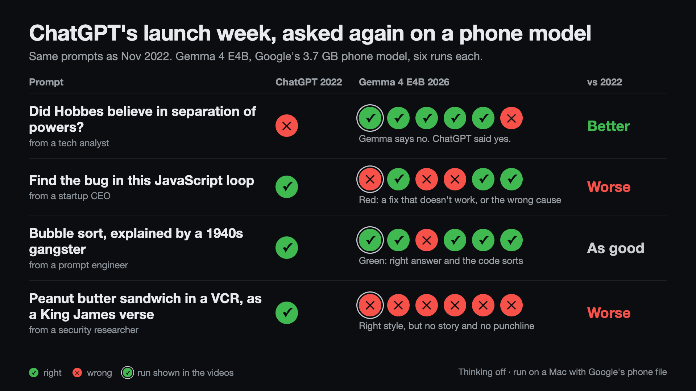

ChatGPT's launch week, rerun on a phone model
November 2026. ChatGPT came out on November 30, 2022. Four of the prompts people shared that first week, given again word for word to Gemma 4 E4B, a 3.7 GB model Google built to run on phones. One answer beats 2022 ChatGPT (Hobbes), one matches it (the gangster), and two fall short (the JavaScript fix and the VCR verse).

Did Hobbes believe in separation of powers?
A tech analyst asked this on launch week and wrote about the answer: ChatGPT said yes and credited Hobbes with legislative, executive and judicial branches. Hobbes argued for one undivided sovereign, so the answer was wrong. Gemma says he did not believe in it and explains why, with Leviathan and a comparison to Montesquieu.
Find the bug
A startup CEO pasted a loop that schedules console.log(i) five times with var i. ChatGPT said it prints the final value instead of 0 to 4 and gave two fixes, both of which work.
Gemma explains the bug the same way, and its first fix (let instead of var) works. Its second fix copies i into var j inside the loop. j is shared too, so it prints 4 five times, but the answer says it prints 0, 1, 2, 3, 4. I ran each code block in Node to check. Other runs had broken fixes too (see the table below).
Bubble sort, as told by a 1940s gangster
A prompt engineer asked for "a step-by-step analysis of the worst-case time complexity of the bubble sort algorithm, with Python code examples", every sentence in the voice of "a fast-talkin' wise guy from a 1940's gangster movie". Both answers get O(n²). Gemma ends nearly every sentence with "see?", and its full code sorts when run. ChatGPT's code comments were mostly in plain English.
Of the twelve runs, two didn't run as written. One split the code into pieces that only work when put back together, and one had a typo in a variable name and crashed.
A peanut butter sandwich in a VCR
The most shared one that week, from a security researcher: "write a biblical verse in the style of the king james bible explaining how to remove a peanut butter sandwich from a VCR". ChatGPT told a story: a man cries out to the Lord, the Lord tells him to use a butter knife, then warns him to keep his sandwiches on a plate. Gemma writes one paragraph in the right style, with no story and no joke at the end. None of its twelve runs told a story like the original.
Every run
Each prompt ran once on default settings and five more times with Google's recommended sampling, with thinking off and on. One dot per run. The ringed dot is the default-settings run, the one in the videos. The last two rows are extra prompts from launch week with no video.
✓ right ✕ wrong
| Prompt | ChatGPT 2022 | Gemma, thinking off | Gemma, thinking on |
|---|---|---|---|
| Hobbes: says no | ✕ | ✓✓✓✓✓✕ | ✓✓✓✓✓✓ |
| JavaScript: finds the cause | ✓ | ✓✓✕✓✓✓ | ✓✓✓✓✓✓ |
| JavaScript: cause, and every fix works | ✓ | ✕✓✕✕✓✓ | ✕✓✓✕✓✓ |
| Gangster: right answer, code sorts | ✓ | ✓✓✕✓✓✓ | ✓✓✓✕✓✓ |
| VCR: a story with a punchline | ✓ | ✕✕✕✕✕✕ | ✕✕✕✕✕✕ |
| Extra: letters in "nineteen" | ✕ | ✓✓✓✓✓✕ | ✓✕✓✕✓✓ |
| Extra: Columbus in 2015 | ✓ | ✓✓✓✓✓✓ | ✓✓✓✓✓✓ |
On "nineteen", Gemma said "seven" twice and 9 once.
How this was run
- The model is Google's own phone file,
gemma-4-E4B-it.litertlmfrom Hugging Face, the one the Google AI Edge Gallery app loads. I couldn't record on a phone, so I ran the same file on a Mac (M2 Pro) with Google's LiteRT-LM tool. It runs locally and needs no internet. - The phone in the videos replays the Mac's text at the speed Google published for this file on a Galaxy S26 Ultra: 22 tokens per second, first token after 0.8 seconds. On the Mac it came out about twice as fast.
- Videos show the default-settings run with thinking off. That setting always picks the most likely next word, so anyone with the file gets the same text.
- Prompts are the originals, word for word, read from the screenshots.
- No follow-up prompts and no retries. The original screenshots show whatever their authors chose to share, and ChatGPT's answers then also varied from run to run.
- This is four prompts that went viral, not a benchmark.